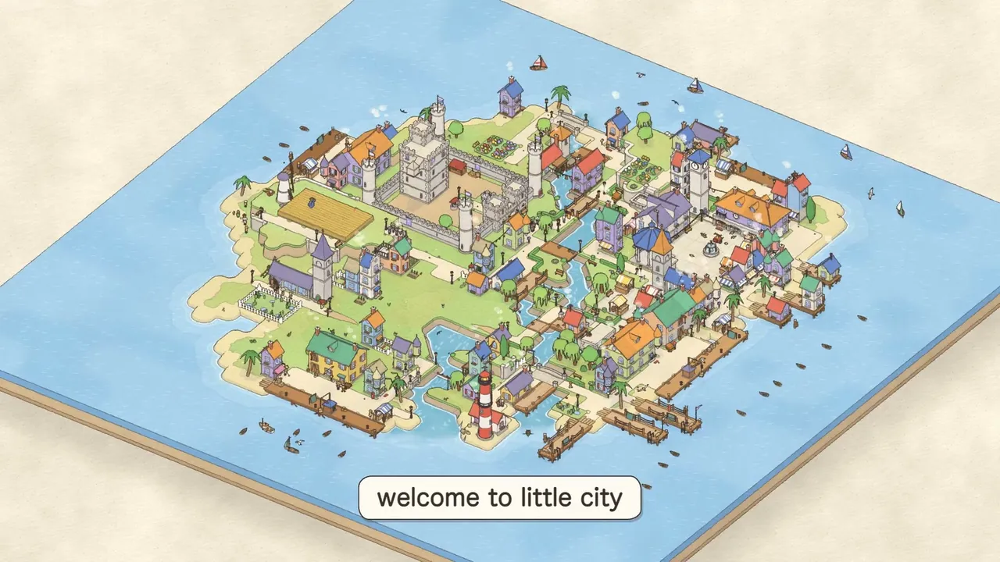
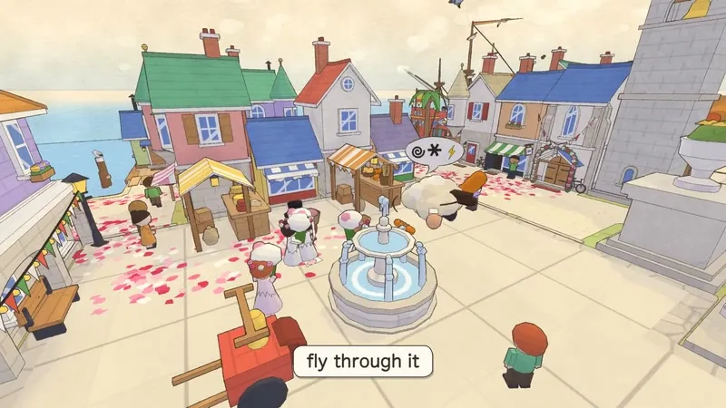
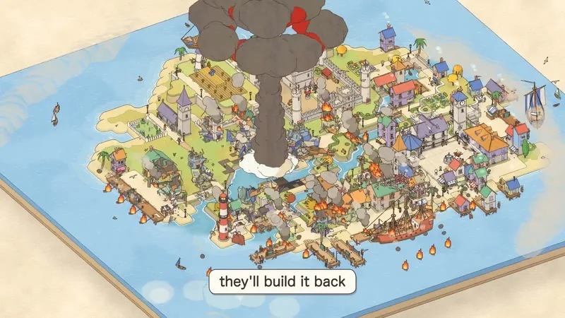
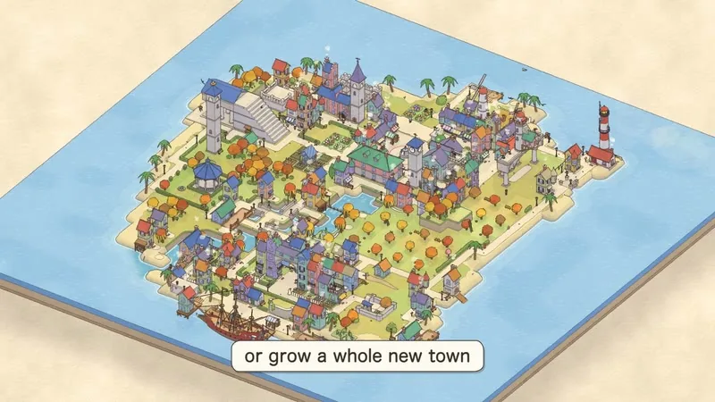

奶油色的纸上，一座小岛浮在浅海里。城堡、港口、小教堂和灯塔沿着岸线挤在一起，墨线有一点点手抖，铅笔在屋瓦和草坡上排着细线。这不是扫描进去的插画。Little City 是 Derek Yao 做的浏览器沙盒城市建造游戏：你放下几个方块，它们会变成一座小镇，然后居民搬进来，开始在里面生活。小镇本身没有美术文件，每一笔都是代码画出来的。
docs/readme/，作者提供。
docs/readme/welcome.jpg，作者提供，MIT）。点击图片可打开游戏。这是什么
Little City 是一款可以在浏览器里免费玩的手绘微缩小镇建造游戏，电脑、iPhone、iPad 和安卓手机都能打开，不用下载，也不用注册。官方介绍把它比作「一个你亲手搭起来的雪花水晶球」：放下几个方块，看它们变成一座小镇，再看它慢慢活起来。
每一块会变成什么，要看你把它放在哪儿。官方的说法是：高塔楼旁边的房子会变成小教堂；在海边叠起四块，就成了灯塔；小路会变成街道，两旁立起路灯，摆上长椅。接着，居民搬进来。磨坊主把面粉送到面包房，面包师再把面包送到广场上的摊位；船早上出海，带着鱼回来；晾衣绳上挂起衣服。有些日子会赶集，有时还会办一场婚礼。四季会轮转，天会下雪，黄昏时路灯亮起。
仓库里的设计说明还写到，作者喜欢 Townscaper 那种「放下一块，它就变成好看的东西」的感觉，又希望小镇会自己活动起来。游戏被写成一件纯玩具：没有钱、没有目标、也没有失败条件。这些是仓库设计稿里的意图说明，不是官网页上的介绍。
代码在 github.com/yaoderek/littlecity.io 的 main 分支，成品站点从 gh-pages 分支发布到 littlecity.io。站点带有官方中文，以及其他多种语言。README 的署名是 Derek Yao，并写明与 Nano-AI 一同完成。仓库最初提交于 2026-11-19（新加坡时间）。
能做什么
玩法很轻。你在一座小岛上放置方块，也可以先按「长出小镇」，让它在一座新岛上自己长出一整座城，然后只是看着。
「长出小镇」会按地形长出不同性格的聚落。游戏内的名称是：港口小镇、大理石之城、城堡小镇、集市小镇、河边小镇、农家小村、山丘小镇、花园小镇。
你还可以飞进镇里四处看。快捷键是 F：W A S D 飞行，空格上升，Shift 下降，滚轮调速度，拖动来环顾，Esc 降落。官方 README 也写了另一件更猛的事：你可以给它一枚核弹，居民会把镇子重新建起来。
小镇会自动保存在浏览器里。你还可以把它做成分享链接，或者存成一张明信片。界面里有撤销，设计说明强调：只有玩家的操作才会改动已保存的世界，规则只在上面派生出外观和生活，不会偷偷改掉你放下的东西。

docs/readme/fly.jpg）。
docs/readme/nuke.jpg）。
docs/readme/grow.jpg）。可放置的结构包括自动块、房子、塔楼、灯塔、拱门、码头、大理石、柱子、台阶、风车、树、喷泉、摊位、篱笆和矮墙；地面上还可以铺小路、广场和花园。自动块会依四周的环境决定自己成为哪一种结构，并在你锁定之前继续适应。
特殊建筑和图鉴
在 Little City 里，建筑不是从菜单里点选的。你只管放方块，小镇自己决定它们变成什么。官方中文图鉴页的标题写的是「全部 102 种特殊建筑和事件」；同一天的 README、介绍页和 llms.txt 仍写「80 多样」或「over 80」。以下类别名称采用官方中文图鉴。
- 房子：小教堂、商店、客栈、市政厅、庄园、谷仓、铁匠铺、学堂、临街楼、排屋、高脚屋、船屋、水磨坊、崖边屋、温室、磨坊小屋、守塔人小屋、瞭望小屋。
- 塔楼：尖塔、钟楼、城堡角楼、钟塔、天文台、鸽舍、灯塔、观景塔。
- 石造：神庙、主堡、门楼、大台阶、石驳岸、底座和雕像、音乐亭、柱廊、方尖碑或纪念柱、高台、剧场、墙中小店。
- 桥：石桥、桥上商铺、天桥、高架桥、门洞、凉廊、飞扶壁。
- 滨水：栈桥、挖出的河和驳船、长码头、木栈道、仓库，以及柯克商船等船只。
- 绿地、小镇与运动场：麦田、公园、围墙花园、果园、口袋公园等绿地；路灯、晾衣绳、驻军、骑手、集市十字碑；还有篮球场、网球场、足球场等一批运动场。
- 日子与日常：赶集日、婚礼、海盗来袭、冬日节庆；海滩日、野餐、下雪天、丰收晚宴、报佳音、麦收；卸货、挥手迎船、渔获上岸；磨坊面包、打水、洗衣日、上学和跳房子、铁匠干活、点灯人和守夜等。
完整的获得方法在官方图鉴里：littlecity.io/zh/guide/。本页不转载各条目的详细做法。
画面怎么画出来
README 写得很干脆：镇上没有美术文件，每一笔都在代码里画。纸色是奶油色 #f2ede3，墨色是暖褐 #3a2f2a。着色器把光照收成三到四档扁平的阶调，来自一个固定的光线方向，没有场景里的真实灯源；草、瓦、石缝、木板和大理石纹理是表面着色器里的铅笔图案；墨线在屏幕空间里寻找深度跳变、表面折痕或墨线编号的变化，再给线的位置和粗细加上固定的笔锋抖动。纸的颗粒加在色彩转换之后。镜头默认是正交的，所以整座岛看起来像摆在桌上的模型。
几何由生成器按结构吐出，再拼进区块网格。相同结构和部件共用一个墨线编号，连在一起的墙和屋顶会画成一整块表面，中间不出现接缝。旗帜、晾衣、人物、船和鸟是单独的实例，不会被烘焙进房屋网格。全镇共用一场会缓慢转向的风，阵风像一波波走过小镇，帆、旗、衣服、烟和树都去采同一阵风。
一天按大约八分钟循环：白天、黄昏、夜晚和黎明依次到来，整帧会套上暖桃或蓝紫的调色，窗户和路灯在夜里亮起来，灯塔也会放出光柱。后来的版本还加入了四季和天气，以及三首用作背景的钢琴曲。本页不转载这些音频。
技术结构
仓库是 TypeScript 项目，用 Vite 8 构建，画面由 three.js 0.187 渲染，测试是 Vitest 和 Playwright，没有单独的界面框架。需要 Node 22.12 或更新版本。package.json 版本号仍是 0.0.0。
世界被保存之后，会先经过一段纯逻辑的 resolve()，得到一张小镇计划，再由生成器 build() 变成几何；生活系统每帧读取这张计划和风、时间，交给渲染器。解析分成两段：先即时决定形状，再在随后几帧补上装饰、人物和步行网络。城镇逻辑是确定的：同样的输入会得到同样的结果，解析和生成里不用 Math.random() 或墙上的时钟。
结构不是为每种邻接关系准备一张手做砌块，而是「生成器加上许多小部件」。规则只产出逻辑记录（角色、门窗、装饰、生活），真正的网格由部件库去画。新增一种特殊建筑，通常是加一条规则，有时再加一个部件，而不必改生成器。规则、生成和解析层不引用 three.js 的场景对象、DOM 或时钟，可以在 Node 里做单元测试。
站点除英语外，还带有简体中文、西班牙语、法语、巴西葡萄牙语、日语、韩语、德语和土耳其语。分析使用 PostHog；README 请自行托管的人保留 .env.production 里的分析密钥，并链回 littlecity.io。仓库里还有开发用的部件陈列页，官方站点的 /gallery/ 不对外开放抓取，本页也不收录。
怎么运行
git clone https://github.com/yaoderek/littlecity.io.git
cd littlecity.io
npm install
npm run devnpm run check 会跑类型检查、lint 和测试。官方还写了截图、图鉴生成和翻译等辅助命令。最省事的办法，是直接打开 littlecity.io。
许可
仓库根目录的 LICENSE 为 MIT License，版权行是 Copyright (c) 2026 Derek Yao and contributors。package.json 的 license 字段同样是 MIT。附录 C 收录许可证原文。
相关阅读
- 另一座用代码画在纸上的可玩世界：「Brushwild」：用圆珠笔和彩铅画出的开放世界 RPG。
- 同样在浏览器里用 three.js 长出一座岛：Yarn World：在浏览器里“织”出一座毛线小岛，以及 「海屿」：纯代码搓出的小岛海洋游戏。
- 走进一片用代码画成的风景：Painted Valley：走进一片用代码画成的夏日山谷。
附录 A：README 全文中译
little city
一个小小的手绘城市建造游戏。你放下几个方块，它们会变成一座小镇，然后人们搬进来，开始在那里生活。
它是免费的，在浏览器里运行，手机上也能玩。
你可以飞进去，只是四处看看。对，你也可以给它一枚核弹，他们会把它重建起来。或者点「长出小镇」，它会替你建好一整座。
有 80 多种特殊建筑和事件等你发现：图鉴里全都有。镇上没有美术文件，每一笔都是用代码画的。
运行
代码在 yaoderek/littlecity.io 的 main 分支；构建好的站点从它的 gh-pages 分支提供。需要 Node 22.12 或更新版本。
git clone https://github.com/yaoderek/littlecity.io.git
cd littlecity.io
npm install
npm run devnpm run check 会运行类型检查、lint 和测试。项目使用 TypeScript 和 three.js。
要自己托管一份吗？请保留 .env.production 里的分析密钥，以便统计游玩次数，并链回 littlecity.io。
许可
MIT。由 Derek Yao 制作，并与 Nano-AI 一同完成。
附录 B：README 英文原文
# little city
a little hand-drawn city builder. you place a few blocks, they turn into a town, and then people move in and start living there.
it's free, runs in your browser, works on your phone too.
**[play it → littlecity.io](https://littlecity.io/?utm_source=github)**
[](https://littlecity.io/?utm_source=github)
you can fly down into it and just look around. yes, you can nuke it, they'll build it back. or hit "grow a town" and it builds a whole one for you.
|  |  |  |
| --- | --- | --- |
there are over 80 special buildings and events to find: [the guide](https://littlecity.io/guide/) has them all. no art files for the town, every line is drawn in code.
## run it
the code is here, on the `main` branch of [yaoderek/littlecity.io](https://github.com/yaoderek/littlecity.io); the built site is served from its `gh-pages` branch. needs node 22.12 or newer.
```sh
git clone https://github.com/yaoderek/littlecity.io.git
cd littlecity.io
npm install
npm run dev
```
`npm run check` runs the types, the lint and the tests. it's typescript and [three.js](https://threejs.org).
hosting your own copy? keep the analytics key in `.env.production` so plays get counted, and link back to [littlecity.io](https://littlecity.io/).
## license
[MIT](LICENSE). made by [Derek Yao](https://github.com/yaoderek), with [Nano-AI](https://github.com/Nano-AI).
附录 C：LICENSE（MIT）原文
展开 LICENSE
MIT License
Copyright (c) 2026 Derek Yao and contributors
Permission is hereby granted, free of charge, to any person obtaining a copy
of this software and associated documentation files (the "Software"), to deal
in the Software without restriction, including without limitation the rights
to use, copy, modify, merge, publish, distribute, sublicense, and/or sell
copies of the Software, and to permit persons to whom the Software is
furnished to do so, subject to the following conditions:
The above copyright notice and this permission notice shall be included in all
copies or substantial portions of the Software.
THE SOFTWARE IS PROVIDED "AS IS", WITHOUT WARRANTY OF ANY KIND, EXPRESS OR
IMPLIED, INCLUDING BUT NOT LIMITED TO THE WARRANTIES OF MERCHANTABILITY,
FITNESS FOR A PARTICULAR PURPOSE AND NONINFRINGEMENT. IN NO EVENT SHALL THE
AUTHORS OR COPYRIGHT HOLDERS BE LIABLE FOR ANY CLAIM, DAMAGES OR OTHER
LIABILITY, WHETHER IN AN ACTION OF CONTRACT, TORT OR OTHERWISE, ARISING FROM,
OUT OF OR IN CONNECTION WITH THE SOFTWARE OR THE USE OR OTHER DEALINGS IN THE
SOFTWARE.